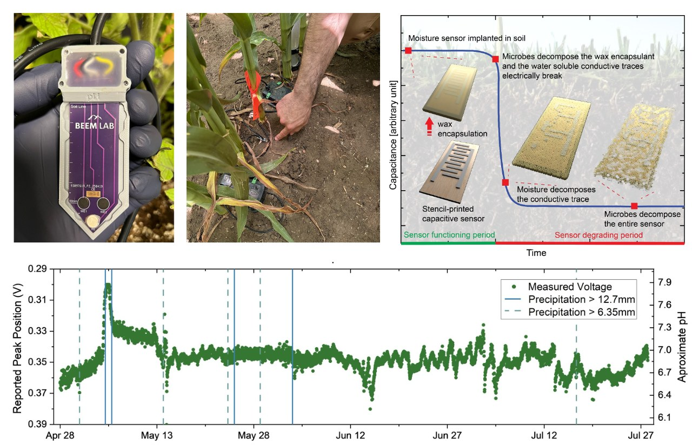
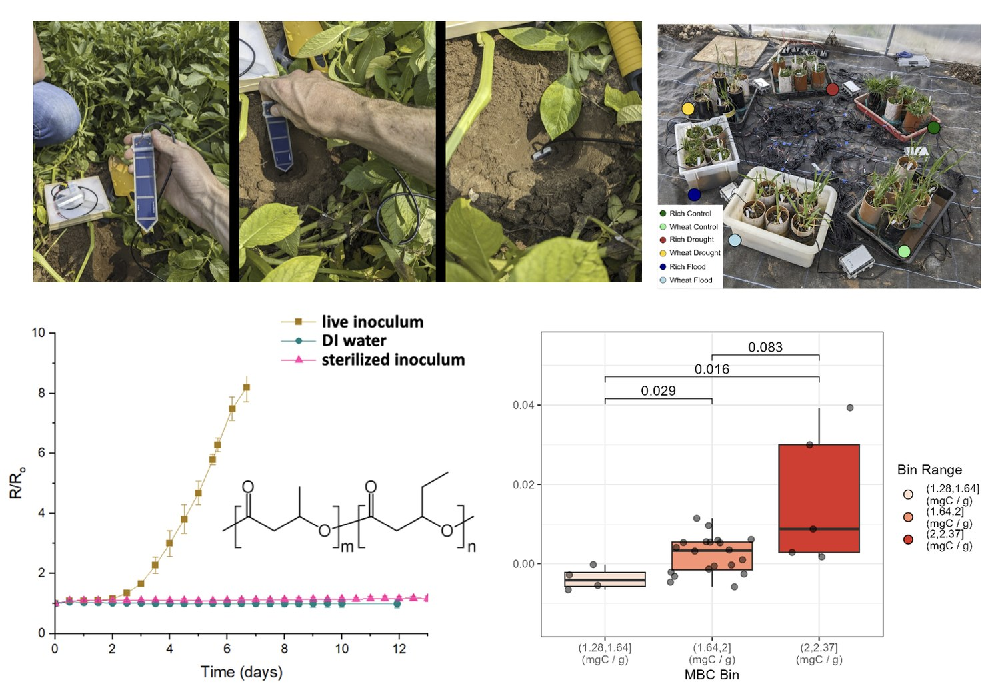
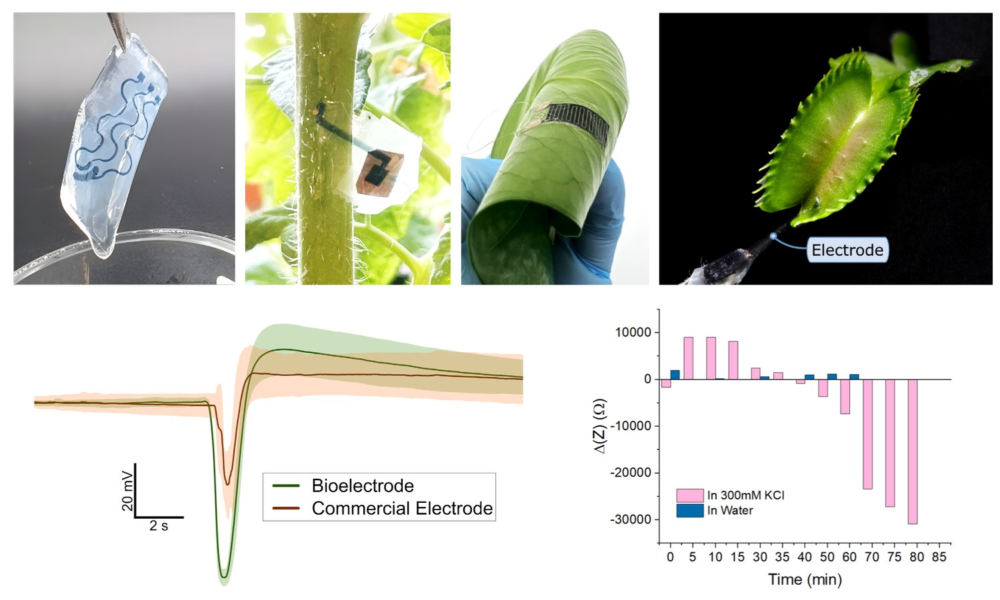
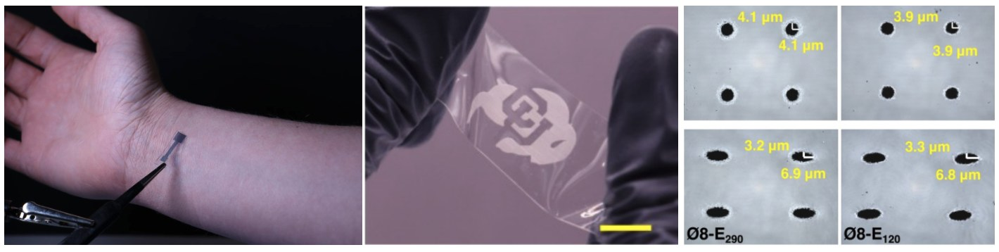
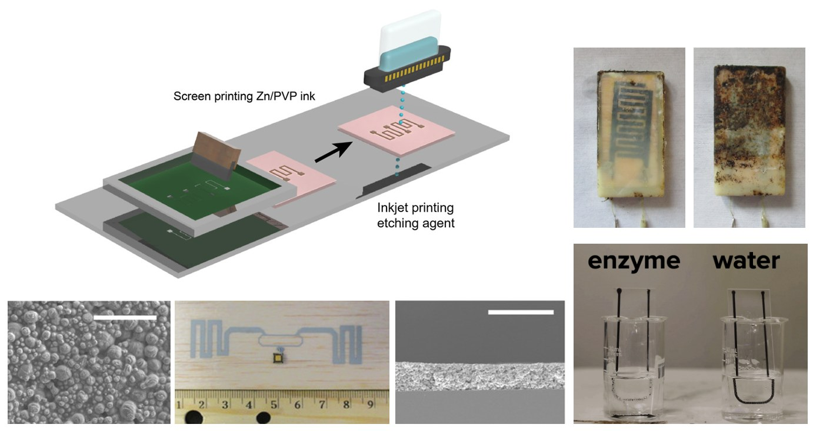
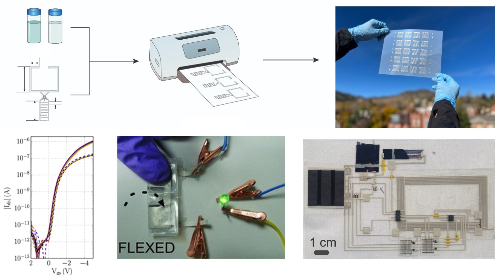
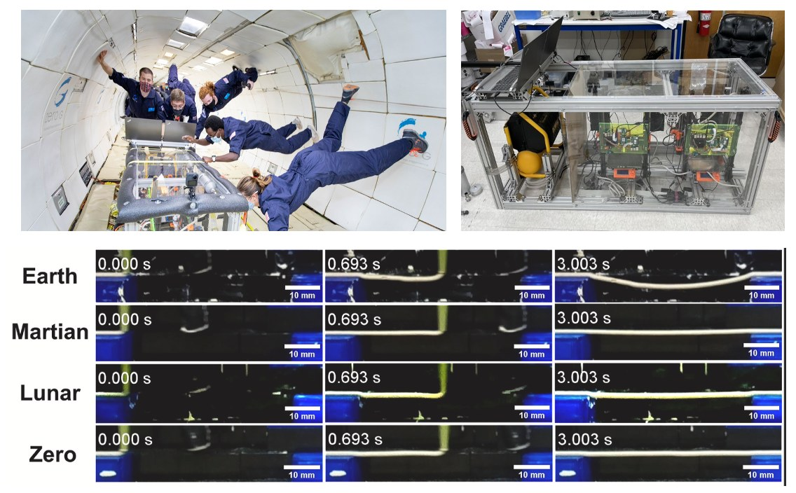
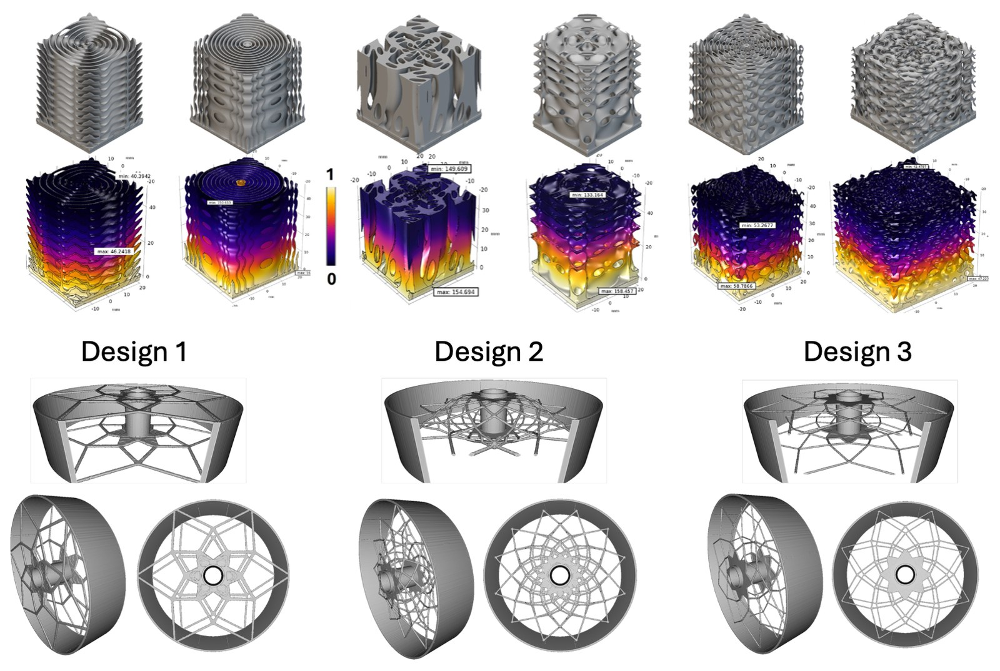

Printed soil sensors for precision agriculture
Printed sensors and systems for high spatio-temporal analysis of the properties of soil and other growing media, including devices for pH, gas content, ion/nutrient concentration, and moisture/temperature/conductivity monitoring, spanning persistent and biodegradable devices across electrochemical, capacitive, and resistive sensing modalities.

Representative Publications
- J. P. Cisneros-Barba, C. A. Crichton, T. Sharpe, M. Atreya, G. L. Whiting. Distributable Screen-printed Soil pH Sensor Demonstrates Robust Response across Variable Soil Conditions. Scientific Reports, 2026, DOI: 10.1038/s41598-026-57457-7. (link)
- C. A. Crichton, L. Lahann, J. P. C. Barba, T. Yuan, E. J. Strand, N. Bruno, P. J. Goodrich, C. L. Baumbauer, M. Atreya, E. Bihar, W. L. Silver, K. Pister, A. C. Arias, G. L. Whiting. Two-electrode Screen-printed pH Sensors for Monitoring Soil and Other Growing Media. IEEE Sensors Journal, 2025, 25, 18692. (link)
- P. Goodrich, N. Poongovan, E. Strand, C. Schwendeman, L. Lahann, S. Koh, Y. Cai, C. Baumbauer, A. Toor. G. L. Whiting, A. C. Arias. Fully-printed Ion Sensor Arrays for Measuring Agricultural Nitrogen and Potassium Concentrations using Nernstian and AI Models. Advanced Sensor Research, 2025, 4, 2400121. (link)
- E. J. Strand, M. J. Palizzi, C. A. Crichton, M. N. Renny, E. Bihar, R. R. McLeod, G. L. Whiting. Multimodal Operation of Printed Electrochemical Transistors for Sensing in Controlled Environment Agriculture. Sensors and Actuators B: Chemical, 2023, 387, 133763. (link)
- Y. Sui, M. Atreya, S. Dahal, A. Gopalakrishnan, R. Khosla, G. L. Whiting. Biodegradation of an Additively Fabricated Capacitive Soil Moisture Sensor. ACS Sustainable Chemistry and Engineering, 2021, 9, 2486. (link)
Soil microbial decomposition activity sensing
Printed sensors based on biodegradable composite conductors for real-time monitoring of microbial decomposition activity in soils to help understand soil health trajectories and discover microbial taxa responsible for material degradation.

Representative Publications
- E. L. Fry, T. J. Sharpe, M. Atreya, G. L. Whiting, J. N. Quinton. Printed PHBV-Based Sensors as a Real-Time Proxy for Soil Microbial Decomposer Activity during Drought and Flood Recovery. European Journal of Soil Science, 2026, 77, e70358. (link)
- T. J. Sharpe, M. Atreya, S. Liu, M. Gong, N. Luna, N. Smock, J. Davies, J. Quinton, R. Bardgett, J. C. Neff, R. Killick, G. L. Whiting. In-situ Decomposition Sensor Output Correlates with Soil Health Indicators. Computers and Electronics in Agriculture, 2026, 244, 111427. (link)
- M. Atreya, S. DeSousa, J-B. Kauzya, E. G. Williams, A. C. Hayes, K. Dikshit, J. Nielsen, A. Palmgren, S. Khorchidian, S. Liu, A. Gopalakrishnan, E. Bihar, C. J. Bruns, R. Bardgett, J. N. Quinton, J. Davies, J. C. Neff, G. L. Whiting. A Transient Printed Soil Decomposition Sensor based on a Biopolymer Composite Conductor. Advanced Science, 2023, 10, 2205785. (link)
Plant-integrated bioelectronics
Printed, self-healable, gel-based biocompatible electronic devices for conformable attachment onto and implantation into plant tissues to enable long-term continuous stimulation and monitoring.

Representative Publications
- C. A. Crichton, T. Sharpe, M. López-Pozo, H. Kabutz, E. J. Strand, N. Bruno, W. W. Adams III, K. Jayaram, B. Demmig-Adams, P. Sankaran, E. Bihar, G. L. Whiting. Long-term On-leaf Monitoring of Plant Electrophysiology with Printed Adhesive Gel Bioelectrodes. Communications Engineering, 2026, 5, 86. (link)
- E. J. Strand, A. Gopalakrishnan, C. A. Crichton, M. J. Palizzi, O. Lee, T. Borsa, P. Goodrich, A. C. Arias, S. E. Shaheen, R. R. McLeod, G. L. Whiting. Ultrathin Screen-Printed Plant Wearable Capacitive Sensors for Environmental Monitoring. Advanced Sensor Research, 2025, 4, 2400177. (link)
- E. Bihar, E. J. Strand, C. A. Crichton, M. N. Renny, I. Bonter, T. Tran, M. Atreya, A. Gestos, J. Haseloff, R. R. McLeod, G. L. Whiting. Self-healable Stretchable Printed Electronic Cryogels for in-vivo Plant Monitoring. NPJ Flexible Electronics, 2023, 7, 48. (link)
Digital fabrication for human health applications
Wearable printed skin-conformable electrodes and sensors for monitoring human health and performance; digitally fabricated biomaterials and membranes for tissue mimics and organ-on-chip systems.

Representative Publications
- P. Chowdry, C. A. Crichton, R. Finster, G. L. Whiting, E. Bihar, D. Kireev. Skin Conformal Hydrogel Bioelectrodes for High-fidelity Electrophysiology and Human-machine Interfaces. Advanced Healthcare Materials, 2026, 15, e05753. (link)
- A. Gopalakrishnan, A. J. Denduluri, S. Gallegos, I. Ramirez, S. E. Schneider, Z. Çetinkaya, H. Kabutz, A. Hedrick, K. Jayaram, C. Neu, G. L. Whiting. Multi-step femtosecond laser-fabricated membranes for regulated migration of biomolecules and cells. bioRxiv (preprint), 2026, DOI: 10.64898/2026.05.22.726371. (link)
- Y. Qiu, Z. Zou, Z. Zou, N. K. Setiawan, K. V. Dikshit, G. L. Whiting, F. Yang, W. Zhang, J. Lu, B. Zhong, H. Wu, J. Xiao. Deep-learning-assisted Printed Liquid Metal Sensory System for Wearable Applications and Boxing Training. NPJ Flexible Electronics, 2023, 7, 37. (link)
- J. E. Barthold, K. McCreery, J. Martinez, C. Bellerjeau, Y. Ding, S. J. Bryant, G. L. Whiting, C. P. Neu. Particulate ECM Biomaterial Ink is 3D Printed and Naturally Crosslinked to form Structurally-Layered and Lubricated Cartilage Tissue Mimics. Biofabrication, 2022, 14, 025021. (link)
Biodegradable conductive materials
Printed biodegradable conductors and encapsulants, and processes for enhancing conductivity, to enable soil-degradable electronic devices and systems.

Representative Publications
- C. L. Baumbauer, A. Gopalakrishnan, M. Atreya, G. L. Whiting, A. C. Arias. Polycaprolactone-based Zinc Ink for High Conductivity Transient Printed Electronics and Antennas. Advanced Electronic Materials, 2024, 2300658. (link)
- M. Atreya, G. Marinick, C. Baumbauer, K. V. Dikshit, S. Liu, C. Bellerjeau, J. Nielsen, S. Khorchidian, A. Palmgren, Y. Sui, R. Bardgett, D. Baumbauer, C. J. Bruns, J. C. Neff, A. C. Arias, G. L. Whiting. Wax Blends as Tunable Encapsulants for Soil-Degradable Electronics. ACS Applied Electronic Materials, 2022, 4, 4912. (link)
- Y. Sui, A. N. Radwan, A. Gopalakrishnan, K. Dikshit, C. J. Bruns, C. A. Zorman, G. L. Whiting. A Reactive Inkjet Printing Process for Fabricating Biodegradable Conductive Zinc Structures. Advanced Engineering Materials, 2022, 25, 2200529. (link)
- M. Atreya, K. V. Dikshit, G. Marinick, J. Nielson, C. Bruns, G. L. Whiting. A Poly(lactic acid)-based Ink for Biodegradable Printed Electronics with Conductivity Enhanced through Solvent Aging. ACS Applied Materials and Interfaces, 2020, 12, 23494. (link)
Printed transistors, circuits, and hybrid electronic systems
Print-based fabrication of electronic devices including field-effect transistors, sensors, light-emitting diodes, photovoltaic devices, batteries, antennas, and passive components, as well as circuits and systems based on these devices and hybrid assemblies that combine printed and microfabricated components.

Representative Publications
- G. L. Whiting, D. E. Schwartz, T. Ng, B. S. Krusor, R. Krivacic, A. Pierre, A. C. Arias, M. Harting, D. VanBuren, K. Short. Digitally Fabricated Multi-Modal Wireless Sensing using a Combination of Printed Sensors and Transistors with Silicon Components. Flexible and Printed Electronics, 2017, 2, 034002. (link)
- J. P. Lu, J. D. Thompson, G. L. Whiting, D. K. Biegelsen, S. Raychaudhuri, R. Lujan, J. Veres, L. L. Lavery, A. R. Vökel, E. M. Chow. Open and Closed Loop Manipulation of Charged Microchiplets in an Electric Field. Applied Physics Letters, 2014, 105, 054103. (link)
- T. Ng, D. E. Schwartz, L. L. Lavery, G. L. Whiting, B. Russo, B. Krusor, J. Veres, P. Bröms, L. Herlogsson, N. Alam, O. Hagel, J. Nilsson, C. Karlsson. Scaleable Printed Electronics: An Organic Decoder Addressing Ferroelectric Non-Volatile Memory. Scientific Reports, 2012, 2, 585. (link)
- A. M. Gaikwad, G. L. Whiting, D. A. Steingart, A. C. Arias. Highly Flexible, Printed Alkaline Batteries Based on Mesh-Embedded Electrodes. Advanced Materials, 2011, 23, 3251. (link)
- G. L. Whiting, A. C. Arias. Chemically Modified Ink-Jet Printed Electrodes for Organic Field-Effect Transistors. Applied Physics Letters, 2009, 95, 253302. (link)
Functional 3D printing for space applications
3D printing of functional materials and objects for space applications including multifunctional gas sorbent devices and regolith composites; study of extrusion-based additive manufacturing processes under reduced gravitational conditions using parabolic flights.

Representative Publications
- J-B. Kauzya, B. Hayes, A. C. Hayes, J. F. Thompson, C. Bellerjeau, K. Evans, J. Osio-Norgaard, G. Gavai, K. Dikshit, C. Bruns, R. MacCurdy, R. A. Street, G. L. Whiting. Direct Ink Writing of Viscous Inks in Variable Gravity Regimes using Parabolic Flights. Acta Astronautica, 2024, 219, 569. (link)
- J. Osio-Norgaard, A. C. Hayes, G. L. Whiting. Sintering of 3D Printable Simulated Lunar Regolith Magnesium Oxychloride Cements. Acta Astronautica, 2021, 183, 227. (link)
- A. C. Hayes, J. Osio-Norgaard, S. Miller, M. E. Vance, G. L. Whiting. Influence of Powder Type on Aerosol Emissions in Powder-Binder Jetting with Emphasis on Lunar Regolith for In Situ Space Applications. ACS Environmental Science and Technology Engineering, 2021, 1, 183. (link)
- J. F. Thompson, C. Bellerjeau, G. Marinick, J. Osio-Norgaard, A. Evans, P. Carry, R. A. Street, C. Petit, G. L. Whiting. Intrinsic Thermal Desorption in a 3D Printed Multifunctional Composite CO2 Sorbent with Embedded Heating Capability. ACS Applied Materials and Interfaces, 2019, 11, 43337. (link)
Design optimization for thermal management and electric machines
Additive manufacturing and computational design, including topology optimization and triply-periodic-minimal-surface lattices, for mass reduction of electric machines and efficient heat sinks.

Representative Publications
- A. Yervez, A. C. Hayes, G. L. Whiting. Genetic Algorithm-based Parameter Optimization of Triply Periodic Minimal Surface Heat Sinks in Natural Convention. Applied Thermal Engineering, 2026, 284, 129137. (link)
- C. R. Isenhart, A. C. Hayes, G. L. Whiting. Additive Manufacturing of Scaleable Jet Impingement and Radial Taper Enhancements for Improved Flow Boiling Performance. Applied Thermal Engineering, 2024, 249, 123355. (link)
- A. C. Hayes, E. A. Träff, C. V. Sørensen, S. V. Willems, N. Aage, O. Sigmund, G. L. Whiting. Topology Optimization for Structural Mass Reduction of Direct Drive Electric Machines. Sustainable Energy Technologies and Assessments, 2023, 57, 103254. (link)
For a full list of publications, see the publications page.